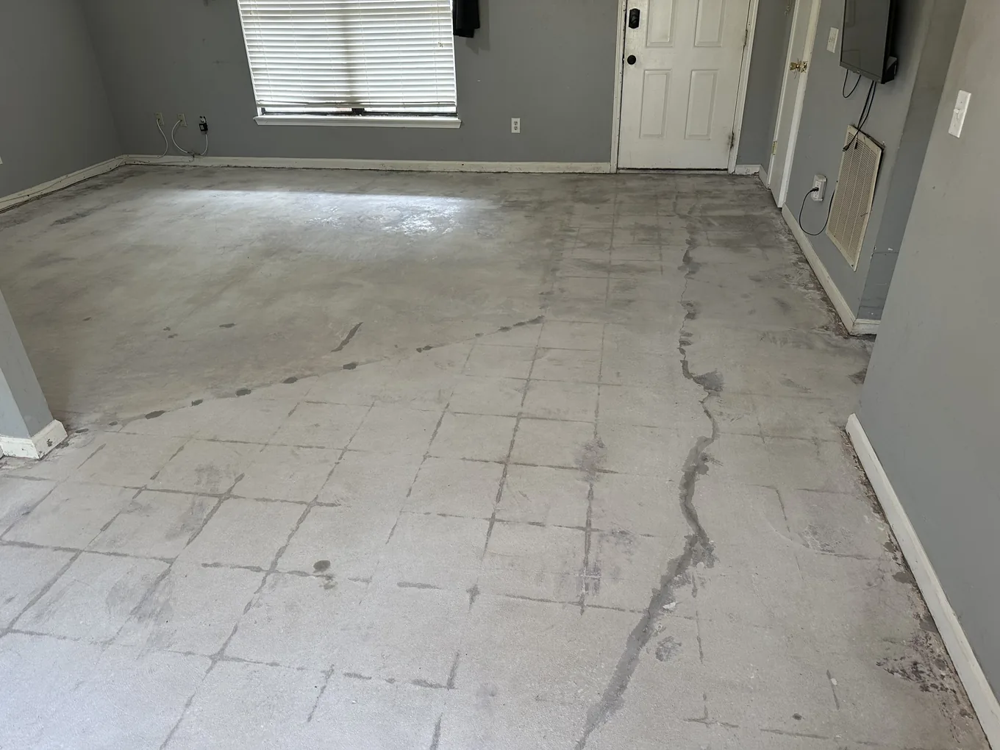

Flooring · Jacksonville
Flooded floors in Jacksonville: restoring water-damaged floors after a hurricane or storm.
Once the water is out and the subfloor has been dried and assessed, here is how damaged plank, tile and hardwood get torn out, repaired or replaced, and what to save for your claim.

Flooded floors are one of the most stressful things a Jacksonville homeowner can face after a hurricane, a tropical storm or a stalled summer downpour. Water comes in under a door, up through a garage or through a roof leak, and suddenly the plank, tile or hardwood you walk on every day is cupped, loose or stained. This guide walks through what happens after the water is gone: who handles which step, what to save for your insurance claim, and how the floor itself gets torn out, repaired or replaced.
One point up front. JW Painting & Epoxy Flooring, led by owner Jimmie Wilson, is a flooring, painting and repair contractor with more than 30 years of hands-on finishing experience. JW does not do water extraction, structural drying or mold remediation. Those steps belong to a qualified mitigation company, and your insurer may want to be involved. JW's part starts once the water is out and the subfloor has been dried and assessed: removing damaged flooring, repairing what can be saved, replacing water-damaged floors and repainting the walls and trim that took a hit.
First things first: the order of work after flooded floors
After a storm it is tempting to rip everything out and start over the same week. A better approach is to follow the order of work:
- Stop the source and stay safe. Fix the roof, plumbing or door that let water in, and deal with electrical concerns before anything else.
- Water removal and drying. A mitigation professional removes standing water, dries the structure and checks moisture in the subfloor, slab and walls.
- Assessment. The mitigation company, your adjuster or both decide what is damaged and what is dry enough to build on. Any mold concerns go to an appropriately qualified provider.
- Finish-floor tear-out, repair and replacement. This is where a flooring contractor like JW comes in.
- Paint, baseboard and trim. Walls, base and door casings are finished so the room looks whole again.
Drying times vary with the materials, the weather and the equipment, so nobody can promise a date until the moisture readings say the space is ready. Installing new flooring over a slab or subfloor that is still wet can trap moisture under the new floor.
What to document before anything is thrown away
Insurance claims often go more smoothly when you keep good records. Before damaged material leaves the house:
- Take wide photos of each room, then close-ups of buckled boards, lifted tile, stained baseboards and water lines on walls.
- Save product labels, leftover boxes or a sample of the existing flooring. That helps identify the product and match it later.
- Keep any moisture readings, invoices and reports from the mitigation company.
- Write down when the water came in and how high it reached, if you know.
JW can help identify the existing flooring and describe the replacement scope in writing, which is useful when you are comparing your adjuster's notes with the work the house actually needs.
How different floors handle flooding
Every flooring type reacts to water a little differently, and that affects whether it can be repaired or has to be replaced.
Luxury vinyl plank. Many luxury vinyl plank products are marketed as water-resistant, but flood water can still get under a floating floor, into the underlayment and down to the slab. Planks sometimes come up for drying and inspection; whether they can go back down depends on the product, the locking system and how long they sat in water. JW's earlier guide to luxury vinyl plank flooring in Jacksonville explains why slab prep and moisture matter so much with LVP.
Tile. Porcelain and ceramic tile hold up to water better than most floors, but the setting materials, grout and any loose or hollow-sounding tiles still need to be checked once things are dry. Cracked or loose pieces can sometimes be replaced individually. JW's tile repair in Jacksonville, FL page covers that kind of work, and a larger re-tile falls under tile flooring installation.
Hardwood and laminate. Wood and laminate are the most sensitive to standing water. Cupping, crowning, swelling at the seams and separation are common after a flood. Some boards can be replaced in sections; other times the damage reaches far enough that a full room is the practical choice. See hardwood and laminate flooring for the replacement side.
Carpet and pad. Wet carpet and pad are usually judged by the mitigation company and insurer. If you are replacing carpet anyway, it can be a good moment to consider a hard-surface floor.
Garage and concrete floors. A flooded garage slab can leave behind stains, debris and loosened coating. Once it is clean and dry, the slab can be assessed for a new coating or repair. JW's guide to garage floor epoxy in Jacksonville covers why prep matters on concrete here.
Repair or replace? Questions flooring contractors in Jacksonville should answer
Good flooring contractors in Jacksonville will explain their reasoning, not just hand you a number. Ask:
- Which areas are damaged, and where does the repair boundary stop?
- Can the existing product still be matched, or will a transition or a full room look better?
- Is the slab or subfloor flat and dry enough for the new floor, and how was that checked?
- What happens to baseboards, door casings and transitions?
- Is wall paint and trim repair included or listed separately?
- What is written into the scope?
Patching only the visible boards can work, but color variation, discontinued products and hidden damage can push the practical boundary to a full room or a run of connected rooms. JW's buckled floor repair page covers floors that lifted or shifted after moisture.
Rebuilding the room: flooring installation in Jacksonville after a storm
Once the space is dry and the scope is set, the rebuild is ordinary careful flooring installation in Jacksonville: leveling and prepping the slab or subfloor, laying out the new floor, setting transitions and reinstalling or replacing baseboard. Some homeowners use a storm repair as a chance to move to luxury vinyl plank or porcelain tile in rooms that have flooded before.
Water damage rarely stops at the floor. Swollen baseboards, stained drywall and marked door casings often need attention too. JW also handles painting and prep and repairs, so the floor and the walls around it can be planned together rather than split between separate crews.
A note for homes across Northeast Florida
Storm water shows up differently around the region. Homes near the St. Johns River in Mandarin, San Marco and Riverside, along creeks in Orange Park, Fleming Island and Middleburg, near the marsh in Yulee and Fernandina Beach, or close to the ocean at the Beaches can all see water in different ways. Inland homes in Macclenny and the rest of Baker County, and newer neighborhoods in Nocatee and northern St. Johns County, also deal with roof leaks and heavy rain. The process above is the same either way: dry first, assess, then rebuild.
Talk with JW about your flooded floors
JW does not publish prices, drying times or warranties, and none are promised here. Those belong in a written scope after the floor has been seen and the space has been cleared as dry.
Call (904) 233-2110, Monday through Saturday, 7 AM to 8 PM (closed Sunday), or request an estimate. Have your ZIP code, the affected rooms, the current flooring type, photos and any mitigation or adjuster notes ready. The live site advertises a 10% appreciation discount for seniors, military and veterans, law enforcement, firefighters and emergency service members, so ask about it when you call.
JW serves Duval County, Clay County, Nassau County, Baker County and northern St. Johns County.